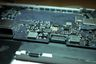
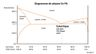
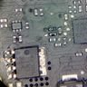
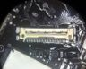
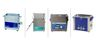
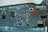

MacBook Pro et Problème de GPU : Le guide ultime Les MacBook Pro 15 sont connus pour leur solidité... et leurs pannes récurrentes. Voici un listing des pannes pour chaque modèle, et des solutions associés. 7 février 2020
Mac qui à pris du liquide: réflexes, guide et conseils Accident classique: un verre renversé sur un Mac. Le meilleurs réflexe est d'éteindre la machine et débrancher la batterie. On vous expliquer... 22 décembre 2019
Rétro-éclairage des MacBook Pro: Le guide technique Le premier guide détaillé et en français pour diagnostiquer les problèmes de rétroéclairage des MacBook Pro et MacBook Air. A vos multimètres ! 1 décembre 2019
 Réparer une carte mère HS de Macbook Pro, c’est possible ? Il n'est pas nécessaire de remplacer une carte mère de MacBook Pro ou MacBook Air. Dans 95% des cas, elle est réparable, et nous vous expliquons... 12 novembre 2019
 6337 : et pourquoi pas 1664 ? Un nom compliqué ? Pas quand on connait sa signification. Derrière 6337 il y a du sens, et de l'engagement. 22 octobre 2019
 Liquide renversé et carte mère MacBook Pro HS: c'est réparable ? Un verre renversé: un catastrophe pour vous, mais un simple cas d'école pour nous. Eclaircissement sur les réflexes à voir et les réparations qui... 20 octobre 2019
Carte mère Macbook Pro: les outils indispensables pour les réparer La réparation de carte-mère ne s'improvise pas. Au-délà du savoir-faire, elle nécessite une petite liste d'outils bien précis. 10 octobre 2019
4 solutions pour changer de SSD sur un MacBook Air Enfin un guide complet sur les SSD des MacBook Air: connecteurs, caractéristiques, solutions pour le remplacement... tout y est. 27 septembre 2019
 Macbook Pro Retina: Réparer le rétroéclairage Entre écran, nappe de connection, connecteur ou carte-mère, les sources de pannes sont nombreuses. Voici un petit guide pour s'y retrouver. 13 juillet 2019
Macbook Pro Retina Fin 2013 qui ne démarre plus Le court-circuit est une panne classique. Elle est simple à diagnostiquer mais demande une certaine technique pour la réparer. 20 juin 2019
Macbook Air 2015 qui ne s'allume plus: La solution est parfois évidente Les MacBook Air, malgré leur robustesse, ont quelques faiblesses. Dans cet exemple, le condensateur à rendu l'âme. 8 mai 2019
 Le Bac Ultrason: Outil essentiel pour réparer une carte mère ? Inconnu du grand public, les bac ultrasons sont des outils de nettoyage très utilisés en optique, médical, mécanique de précision ou horlogerie.... 4 mai 2019
 iMac 2009 A1311 - Carte mère 820-2494: Mort? Pas tout à fait... Le cas d'une panne détectée et diagnostiquée par défaut. Ce genre de réparation n'est pas dans nos habitudes, mais l'exemple était parlant. 13 avril 2019